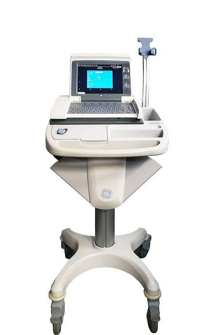

01 Problem Statement
Electrocardiograms (EKGs) are critical tools for monitoring cardiac rhythm and electrical activity, yet commercial monitoring systems remain costly and hard to access for low-resource or educational environments.
The core challenge stems from physics: cardiac biopotentials are microvolt-to-millivolt range signals. This leaves raw data highly vulnerable to interference from muscle contractions (EMG artifacts), respiration shifts, and environmental electromagnetic fields.
